قاعدتين ذهبيات: (١) خلّي Claude Code مفتوح وأنت تستخدم البرنامج — هو اللي ينفّذ الأزرار. (٢) ما ينشر شي ولا يدفع شي بدون ما يسألك أول.
المحتويات
١الفكرة بدقيقة — الطريقتين
٢التنصيب والتحديث
٣نافذة الترحيب
٤جولة بتبويبات البرنامج
٥الطريقة أ: «عندي فيديوهات»
٦الطريقة ب: «ما عندي فيديو»
٧السلاسل — شكل ثابت لكل حلقة
٨الإحصائيات وإنستقرام
٩بنك الحركات — اطلب حركة برقمها
١٠الشاشة الخضرا والتتبّع
١١الدروس المتحركة
١٢حزمة النشر وكلمة التعليق
١٣المشاكل والأسئلة
١٤وين ملفاتي؟
١الفكرة بدقيقة — الطريقتين
آي أو استوديو = إضافة لـ Claude Code + برنامج بالمتصفح (app.html). البرنامج ترتّب بيه أفكارك وتدوس أزرار، وClaude بالطرفية ينفّذ. كل شي يطلع لإنستقرام ويوتيوب وتيك توك بالتساوي، وملفاتك تبقى بجهازك.
أ) «عندي فيديوهات»
عندك كلام للكاميرا، درس، بودكاست، أو مقاطع.
١. الفيديو: سجّل باستوديو الكورسات، أو جيب ملفك الجاهز٢. للمونتاج: زر بالبرنامج أو جملة لـ Claude٣. Claude يمنتج: سكتات، كابشن، موشن، أصوات، لوك٤. تراجع: التايملاين، «عدّل لي»٥. تنشر: حزمة نشر لكل منصة
التفاصيل بالقسم ٥.
ب) «ما عندي فيديو»
ما تريد تصوّر، أو بس عندك فكرة أو خبر.
١. الفكرة: ترند يومي من حساباتك، أو فكرتك/سكربتك٢. تعدّلها: «خلّي Claude يعدّلها»٣. Claude يصنع: موشن، كاروسيل، قصة AI، درس متحرك…٤. تراجع: لقطات ومعاينة قبل التسليم٥. تنشر: نفس حزمة النشر
التفاصيل بالقسم ٦ — وبيه شنو ما يگدر يسويه بلا تصوير.
شلون الزر بالبرنامج يوصل لـ Claude؟
المتصفح ما يگدر يحچي ويّا Claude مباشرة. لما تدوس «🎬 للمونتاج» أو «🤖 خلّي Claude يعدّلها» أو «أرسل لـ Claude»، الطلب ينحفظ بملف .io/queue.json بمجلد مشروعك. Claude (الطيار الآلي) يراقب هالملف، يستلم الطلب، يشتغل، ويكتب التقدّم — وأنت تشوفه بالبطاقة (⏳ بالانتظار ← ⚙️ يشتغل ← ✅ خلص).
ما صار شي بعد ما دست الزر؟ اكتب لـ Claude شغّل الطيار الآلي. الطلبات ما تضيع — محفوظة وينفّذها أول ما يشتغل.
الخطوة الرابعة «هويتك البصرية»: «أنشئ لي هوية» (تختار إحساس وتاخذ وحدة من ثلاث) أو «أرفع هويتي» (شعار أو بوستات). الألوان تمشي على كل فيديو وكاروسيل.
٤جولة بتبويبات البرنامج
سبع تبويبات + رابطين (الإحصائيات وإنستقرام). كل تبويب خطوة من الشغل: الأفكار ← الجدول ← البناء ← المونتاج، ومشاريعي تجمع كلشي، والمكتبة كل الأدوات، وهويتي إعداداتك.
📋 المعرّف: ينسخ اسم الحركة/الصوت تلصقه بطلبك لـ Claude.
🪪 هويتي
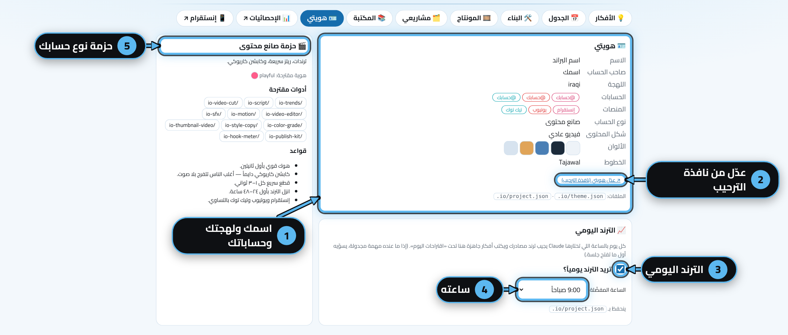
هويتك: الاسم، اللهجة، الحسابات، الألوان.
عدّل هويتي: يفتح نافذة الترحيب من جديد.
الترند اليومي: شغّله أو طفّيه.
الساعة اللي يجيب بيها الترند.
حزمة نوع حسابك: الأدوات والقواعد المقترحة إلك.
٥الطريقة أ: «عندي فيديوهات»
عندك فيديو (أو راح تسجّل)، وتريد Claude يمنتجه. ثلاث طرق توصّل الفيديو، وبعدها نفس المسار.
أ١ — سجّل باستوديو الكورسات (أسهل طريق)
من «البناء» ← «تسجيل» ← «استوديو الكورسات»، أو گول أريد أسجّل. يحتاج Chrome أو Edge.
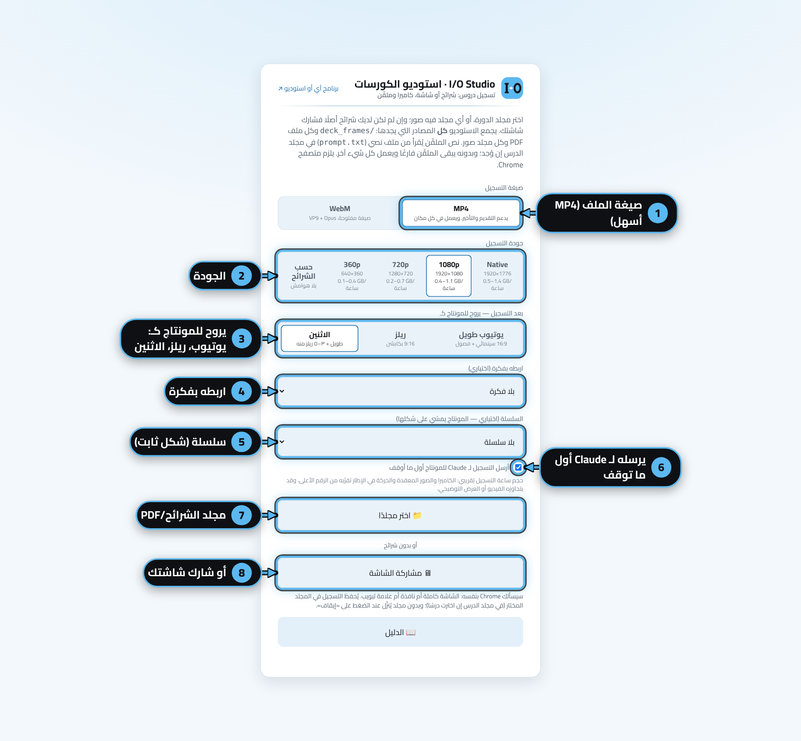
صيغة الملف: MP4 (الأسهل، يشتغل بكل مكان) أو WebM.
الجودة: 1080p تكفي. «حسب الشرائح» بلا هوامش.
يروح للمونتاج كـ: يوتيوب طويل 16:9، ريلز 9:16، أو الاثنين (طويل + ٣–٥ ريلز منه).
اربطه بفكرة: (اختياري) Claude ياخذ عنوانها وهوكها.
السلسلة: (اختياري) المونتاج يمشي على شكلها.
أرسله لـ Claude أول ما أوقف: خلّيه مفعّل — هذا اللي يخلي المونتاج تلقائي.
اختر مجلد: فيه صور شرائح أو PDF، ونص الملقّن من prompt.txt.
أو شارك شاشتك بدون شرائح.
شنو يصير لما توقف التسجيل؟ الملف ينرفع لـ recordings/ بمجلد مشروعك، وطلب مونتاج ينضاف لـ Claude. تشوف التقدّم ببطاقة الفكرة و«طلباتك لـ Claude»، والفيديو الجاهز يطلع بـ output/.
أ٢ — عندك فيديو جاهز (من الجوال أو الكاميرا)
الطريقة
شلون بالضبط
١. گول لـ Claude المسار (الأسرع)
منتج هالفيديو: ~/Videos/clip.mov — ريل بكابشن. Claude ينسخه لمجلد شغل (work/…/src.mov) ويبدي. رابط Google Drive (مشاركة «أي شخص لديه الرابط») يشتغل هم.
ياخذ دقايق حسب الطول. Claude يحدّث البطاقة كل مرحلة، ويوريك لقطة قبل ما يسلّم. الملف النهائي بـ output/ — ويطلع بـ «مشاريعي» كـ «جاهز».
أ٥ — راجع بالتايملاين
گول افتح التايملاين (أو من تبويب «المونتاج» ← «افتح المحرّر»). الفيديو يطلع مقسوم لأجزائه:
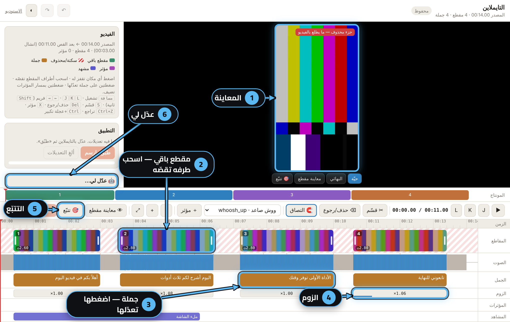
المعاينة: حيّة، النهائي، معاينة مقطع، تتبّع.
مقطع باقي: الملوّن باقي بالفيديو، والمخطّط بالأحمر بيناتهم سكتة انشالت. اسحب الأطراف تقص، S يقسّم، Del يحذف أو يرجّع.
الجمل (الكابشن): اضغط جملة تنفتح نافذتها.
الزوم لكل مقطع.
🎯 تتبّع: ثبّت عنصر على شي يتحرك (القسم ١٠).
🤖 عدّل لي: اكتب طلبك وClaude يطبّقه.
بعد ما تعدّل بيدك (قص، زوم، مؤثر)، زر «طبّق» بآخر شريط الأدوات يعيد بس الخطوات اللي تأثرت بتعديلك.
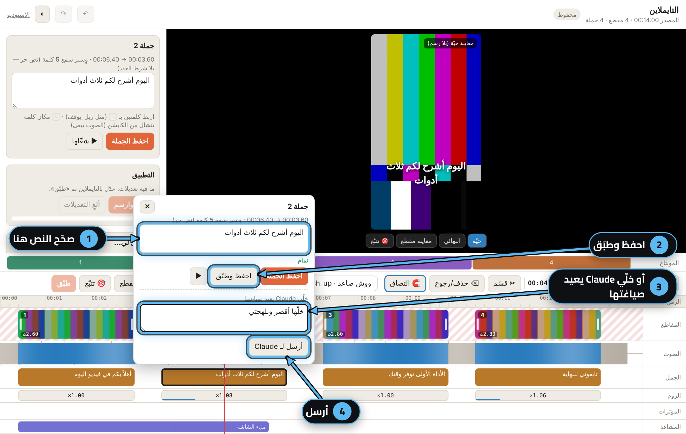
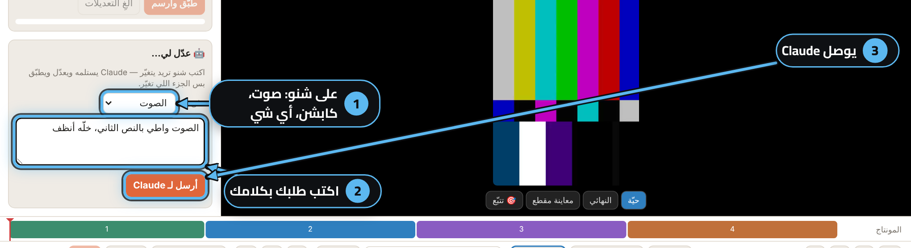
تعديل جملة (يمين)
صحّح النص بمكانه — بنفس عدد الكلمات.
احفظ وطبّق: يعيد الكابشن بس.
خلّي Claude يعيد صياغتها: «أقصر، بلهجتي…».
أرسل: الطلب يوصل Claude.
«عدّل لي» (يسار)
على شنو: الصوت، الكابشن، أو أي شي ثاني.
اكتب طلبك بكلامك: «الصوت واطي بالنص الثاني».
أرسل لـ Claude: يعدّل ويطبّق بس الجزء اللي تغيّر.
بلا تحديد = الطلب على الفيديو كله. حدّد مقطع أو جملة أول حتى يكون الطلب عليه بس.
أ٦ — التصدير والنشر
الفيديو النهائي MP4 جاهز بـ output/ (أو بمجلد الشغل) — يطلع بـ «مشاريعي» ← «جاهز» و«📋 انسخ المسار».
گول كفر وثمبنيل — كفر الريل (ينقرا بشبكة البروفايل) وثمبنيل يوتيوب.
گول جهّز للنشر — حزمة النشر (القسم ١٢).
گول افحص قبل النشر — حكم: يعدّي أو يحتاج إصلاح.
النشر نفسه: تنزّله أنت، أو انشر (بلوتاتو) — يسألك قبل كل منشور.
٦الطريقة ب: «ما عندي فيديو، خلّي الذكاء يسوي»
تبدي من فكرة (ترند أو منك)، وClaude يصنع محتوى ما يحتاج تصوير. وإذا الفكرة نفسها تحتاج وجهك أو صوتك، يگلك بصراحة.
ب١ — الترند اليومي ← «اقتراحات اليوم»
تفعيله: من نافذة الترحيب أو «هويتي» ← الترند اليومي + الساعة.
شلون يجيبه: بالساعة اللي اخترتها (لو عندك مهام مجدولة) أو بأول جلسة Claude Code باليوم، Claude يسحب آخر منشورات الحسابات اللي تتابعها بإنستقرام عبر Composio (أداة ScrapeCreators). يقيس كل منشور على عادة حسابه: منشور جاب ٤× مشاهدات الحساب المعتادة = ترند.
الحساب الفوري (instant account): ScrapeCreators يشتغل على الحساب الفوري مال Composio — ما تحتاج حساب أو مفتاح ScrapeCreators، تدفع من رصيدك بـ Composio. Claude يسألك مرة وحدة قبل أول سحب.
الكلفة تقريباً: طلب لكل حساب ≈ ٠٫٠٠١$. يعني ٢٠ حساب يومياً ≈ ٠٫٠٢$ باليوم ≈ ٠٫٦٠$ بالشهر. Claude يقرا الأسعار الحالية ويگلك الرقم قبل ما يبدي.
بدون Composio؟ يشتغل بالبحث العام بالويب (أخبار ومواقع مجالك) — بلا كلفة إضافية، بس بدون مقياس «× عادة الحساب».
النتيجة: ٣–٥ أفكار تنزل بـ «🔥 اقتراحات اليوم»، ولوحة أخبار بـ output/trends/. تريده هسه؟ گول شنو الترند بمجالي اليوم؟
Claude ياخذ الفكرة من الترند ويكتبها بصوتك — ما ينسخ كلام أو سكربت أي حساب، وما يذكر أسماء الحسابات بمنشوراتك.
ب٢ — عدّل الفكرة، أو ابدأ من سكربتك
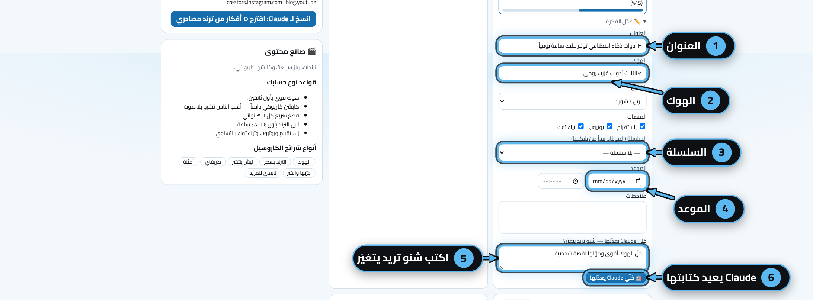
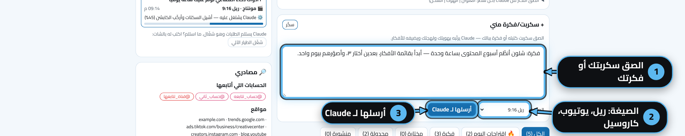
«✏️ عدّل الفكرة» (يمين)
العنوان — عدّله بيدك.
الهوك (أول ٣ ثواني).
السلسلة — إذا تريدها حلقة بشكل ثابت.
الموعد — تنجدول بالتقويم.
شنو تريد يتغيّر: «خلّ الهوك أقوى، حوّلها قصة».
🤖 خلّي Claude يعدّلها: يعيد كتابتها ويحدّثها بالبرنامج.
«+ سكربت/فكرة مني» (يسار)
الصق سكربتك أو اكتب فكرتك.
الصيغة: ريل، يوتيوب طويل، الاثنين، أو كاروسيل.
أرسلها لـ Claude: يرتّبها بهويتك ولهجتك وتنضاف فكرة جديدة.
ب٣ — شنو يگدر Claude يسوي بلا تصوير؟
اطلبها بالشات (أو من «البناء» ← انسخ الأمر). كلها تطلع بألوانك ولهجتك وللمنصات الثلاث:
الناتج
شلون تطلبه
شنو تحتاج منك
كاروسيل io-carousel
سوّي كاروسيل عن هالخبر — شرائح HTML ← صور PNG (1080×1440)
ولا شي الخبر أو الموضوع بس
موشن سريع ٤–١٠ ث io-motion
١١ قالب: كتابة حركية، رقم يعد، أعمدة، اقتباس، قبل/بعد، انترو، خطوات، قائمة…
ولا شي (قبل/بعد يحتاج صورتين)
فيلم موشن 3D io-motion-video
سوّ فيلم موشن من هالسكربت · اشرح هالتطبيق بفيديو (لقطات حقيقية داخل آيفون/ماك بوك 3D) · اشرح لي شلون يشتغل المكيف
بلا تصوير الصوت: صوت مولّد (edge-tts، يحتاج إنترنت) أو صوتك مسجّل لحاله. شرح تطبيق = رابطه أو لقطاته.
قصة AI بشخصية ثابتة io-ai-story
قصة AI عن ليش نشخر — سكربت، قائمة لقطات، ورقة الشخصية، وصف صورة لكل لقطة (نفس الـseed)، وبعدها التركيب بالحركات والكابشن الكاريوكي.
صور منك صور الشخصية تولّدها أنت بأداة الصور اللي تستخدمها (Claude يعطيك الأوصاف جاهزة). الخلفيات بلا أشخاص ممكن تتولّد بخدمة مدفوعة (مفتاح FAL) — يگلك الكلفة قبل.
درس متحرك io-lesson
درس حرف الباء للأطفال · درس قوانين نيوتن على سبورة — سبورة طباشير/بيضاء، دفتر، كرتون، شخصية معلّم/معلّمة، رسوم ومحاكاة.
ولا شي تريده بصوتك؟ تسجّله بالاستوديو والملقّن يعرض جملة كل لقطة.
ريل من أرقامك
من صفحة الإحصائيات: «🎬 سو ريل من هالأرقام» — عدّاد، أعمدة، منحنى بقاء. الأرقام من إحصائياتك بس.
ولا شي
إعلان منتج io-ads
سوّي إعلان لمنتجي — زاوية بيعية، سكربت ١٥–٣٠ ث، صور بمقاسات المنصات، وفيديو موشن من صور المنتج.
صور المنتج أو رابط صفحته
تعريب بوست
عرّب هالبوست بنفس تصميمه · نفس الفكرة لجمهوري
الرابط أو الصورة
ب٤ — ومتى يطلب منك تسجّل؟
تريد…
الجواب الصريح
ريل كلام للكاميرا، يوتيوب طويل، بودكاست، فلوگ
يحتاج تسجيل هذا مونتاج لفيديوك — ما يتسوّى بلا فيديو. روح للطريقة أ.
دست «🎬 للمونتاج» على فكرة ما إلها فيديو
الزر للمونتاج بس: Claude يسألك سؤال واحد — «ترفع الفيديو لو تسجّل؟». تريد محتوى بلا تصوير لنفس الفكرة؟ گول بالشات: سوّ هالفكرة فيلم موشن أو كاروسيل.
شخصية تشبهك بالقصة
صورة وجهك مرجع (بإذنك)، أو الحركة 233 «صورتك بدائرة على جسم كرتوني» — بلا توليد.
صوتك بالفيلم
سجّل الصوت لحاله (حتى بالجوال) وگول استخدم صوتي — يوقّت الكلمات عليه.
Claude ما يولّد فيديو بوجه شخص حقيقي، ولا يحط أشخاص حقيقيين أو شعارات بالصور المولّدة، ويذكر بالكابشن إن الصور مولّدة بالذكاء الاصطناعي.
٧السلاسل — شكل ثابت لكل حلقة
عندك برنامج أسبوعي («درس الأسبوع»، «تحدي الأسبوع»…)؟ سوّ سلسلة مرة وحدة، وكل حلقة تنضاف إلها يبدي مونتاجها من نفس الشكل: الألوان، الخط، ستايل الكابشن، ستايل الموشن، المقدمة، الختام، الشريط السفلي، الموسيقى، اللوك، والصيغة.
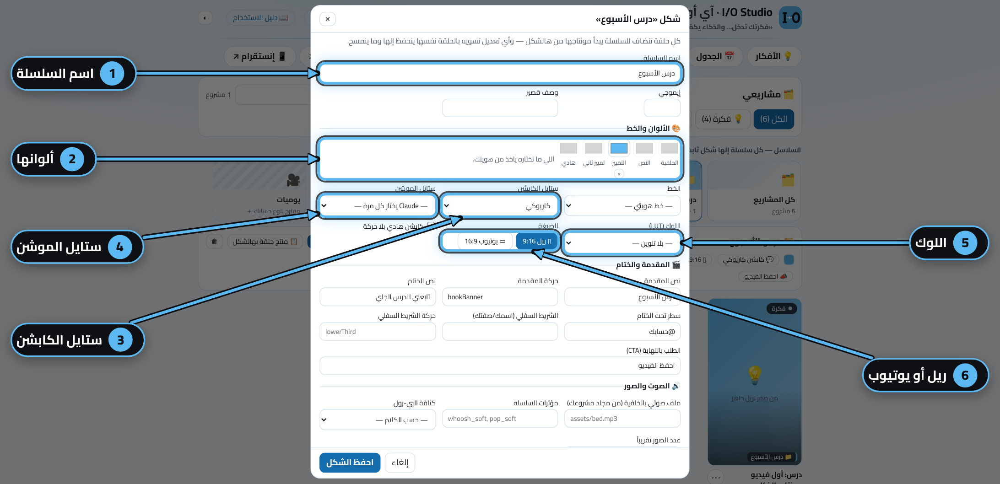
اسم السلسلة وإيموجي ووصف.
ألوانها — اللي ما تختاره ياخذ من هويتك.
ستايل الكابشن (كاريوكي، بطاقة، خط…).
ستايل الموشن — أو «Claude يختار كل مرة».
اللوك (LUT) — تلوين ثابت.
الصيغة: ريل 9:16 أو يوتيوب 16:9.
ثلاث طرق تسوي سلسلة
«مشاريعي» ← ＋ سلسلة جديدة (أو وحدة من المقترحة لنوع حسابك).
حلّل بعمق: Claude يشوف الفيديو نفسه (أول ٥ ثواني، أول فريم، الكابشن) ويقارنه بأفضل منشوراتك.
نسخة محسّنة: فكرة جديدة بنفس الموضوع وهوك أقوى.
بالصورة: تحليل تجريبي لريل افتراضي.
٩بنك الحركات — اطلب حركة برقمها
كل حركة موشن إلها رقم ثابت ما يتغيّر (البنك فيه أكثر من ٣٥٠ حركة). Claude يختار لكل فيديو ٣ حركات أساسية ولهجات للحظات الخاصة — بس تگدر تطلب بالرقم، أو تمنع حركة ما تحبها.
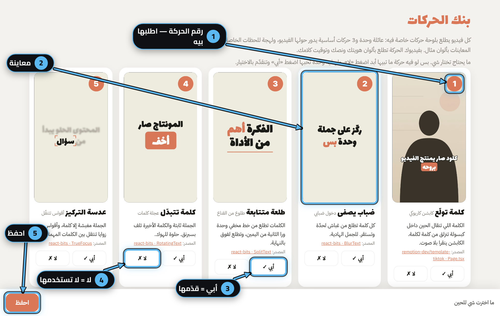
رقم الحركة — هذا اللي تذكره لـ Claude.
معاينة بألوان مثال (بفيديوك تطلع بألوانك وكلامك).
أبي: تتقدّم بالاختيار.
لا: ما تنستخدم أبد.
احفظ: اختيارك يوصل Claude.
شلون تفتح المعرض وتطلب
تريد
گول لـ Claude
تتفرّج على الحركات المرقّمة
افتح معرض الحركات — أو من «المكتبة» ← «حركات الموشن»
حركة معيّنة بلحظة معيّنة
استخدم الحركة 242 بالختام · الحركة 103 على الرقم
تفضّل وتمنع
أبي 3 و7 و12، و5 لا — ينحفظ لكل الفيديوهات الجاية
بالمكتبة زر «📋 المعرّف» ينسخ اسم الحركة الإنكليزي (مثلاً stampSlam) — Claude يفهم الاسم أو الرقم.
١٠الشاشة الخضرا والتتبّع
🟩 الشاشة الخضرا
صوّرت قدام قماش أخضر (أو حايط أزرق موحّد)؟ گول عندي شاشة خضرا — القصّ باللون أنظف وأسرع من قصّ الذكاء الاصطناعي، والشعر يطلع أحسن. اختار شكل الخلفية:
گول…
الشكل
ينفع لـ
خلفية توهج (glow)
أرضية ليلية من ألوانك، توهج يتنفس ورا راسك، بوكيه وحبيبات
أي ريل كلام نظيف بلا غرفة
زجاج مثلّج (glass)
أنت فوق غرفة (فيديو/صورة منك) + ويدجتات زجاج: إشعار، رقم كبير، تقدّم
إنجاز، رقم، «خلّص الشغل»
خط LED (led)
جدار غامق وخط LED بلونك، أو مقطعك يتكرر
هوية ثابتة لسلسلة
طرفية تكتب (terminal)
أوامر تنكتب وراك
محتوى تقني
صفحة ورايه (page)
لقطة صفحة حقيقية تنسحب ورا الشخص
شرح موقع أو أداة
خلفيتي هاي (key)
قصّ بسيط وخلفية من عندك (صورة/فيديو/لون)
أي شي
Claude يجرّب على أول ثانيتين أول، ويوريك قبل ما يرسم الكامل. حواف خضرا؟ گول الحواف بيها أخضر ويضبط العتبة.
🎯 التتبّع — ثبّت شي على شي يتحرك
رقم على قاع قدر، شعار على شاشة، سهم يلحق جسم… گول ثبّت السعر على العلبة، أو من التايملاين زر «🎯 تتبّع»:
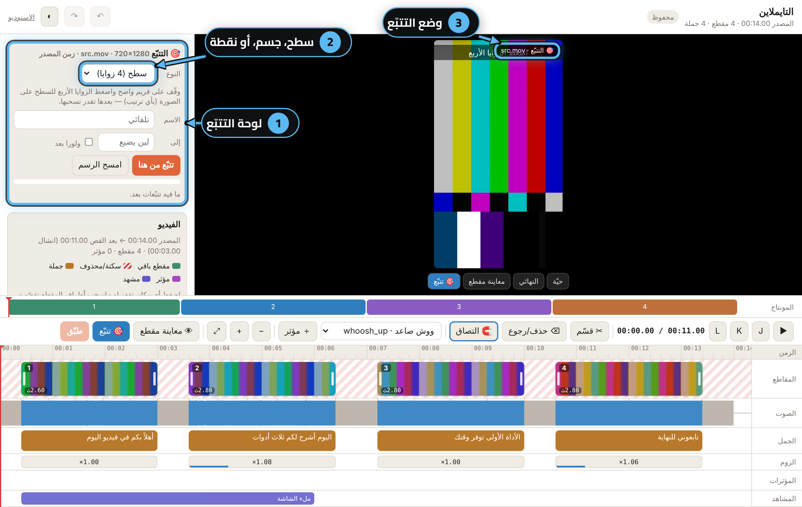
لوحة التتبّع: تختار فريم واضح، وتأشّر زوايا السطح (أو الجسم أو النقطة).
النوع: سطح مستوي، جسم، أو نقطة.
وضع التتبّع: المعاينة تشتغل على الفيديو بعد القص والزوم.
إذا التتبّع ضاع بلحظة، «صلّح من هنا» يكمّل من الفريم الصح. بعدها تربط العنصر بالتتبّع و«طبّق».
١١الدروس المتحركة
مكتبة دروس جاهزة (عربي، رياضيات، فيزياء، علوم، كيمياء، أحياء، تاريخ، جغرافيا، صناعة محتوى…) بأربع ستايلات وبالمقاسين. افتحها من «المكتبة» ← «دروس» ← «↗ افتح»، أو lessons.html.
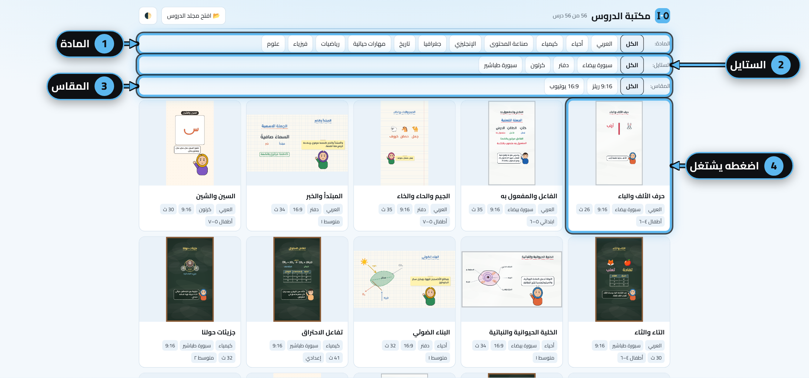
المادة.
الستايل: سبورة طباشير، سبورة بيضاء، دفتر، كرتون.
المقاس: 9:16 ريلز أو 16:9 يوتيوب.
اضغط الدرس: يشتغل بمكانه (تشغيل، إيقاف، سحب).
درس جديد
گول درس عن الكسور للصف الرابع، سبورة طباشير، 16:9.
بأول درس يسألك: «الشخصية اللي تشرح ذكر لو أنثى؟» — وينحفظ.
Claude يبدي من أقرب درس جاهز، يكتب اللقطات بلهجتك، يتأكد من المعلومة، ويوريك شريط لقطات قبل التصدير MP4.
بصوتك؟ أريد أسجّل الدرس بصوتي — الاستوديو يعرض جملة كل لقطة بالملقّن.
١٢حزمة النشر وكلمة التعليق
گول جهّز للنشر بعد أي فيديو أو كاروسيل. تطلع ملف output/publish/<الاسم>.md بثلاث أقسام، كل منصة بلغتها وحدودها:
إنستقرام
كابشن (أول سطر هوك ≤١٢٥ حرف)، ٣ هاشتاقات، نص الغلاف، وصف الصورة.
يوتيوب
عنوان ≤٦٠ حرف، وصف + فصول بالوقت، ٣ هاشتاقات، نص الثمبنيل.
تيك توك
كابشن بأسلوب كلام وسؤال، ٣–٥ هاشتاقات، نص لأول ثانيتين.
ووقت النشر المقترح لكل منصة من إحصائياتك (أو «جرّب المساء ٨–١٠» إذا ما عندك أرقام). Claude يفحص الحزمة قبل ما يسلّمها (هاشتاقات زايدة، عنوان طويل، إعلان بلا إفصاح…).
💬 كلمة التعليق ← رسالة خاصة
تريد «اكتب دليل بالتعليقات ويوصلك الرابط بالخاص»؟ گول: